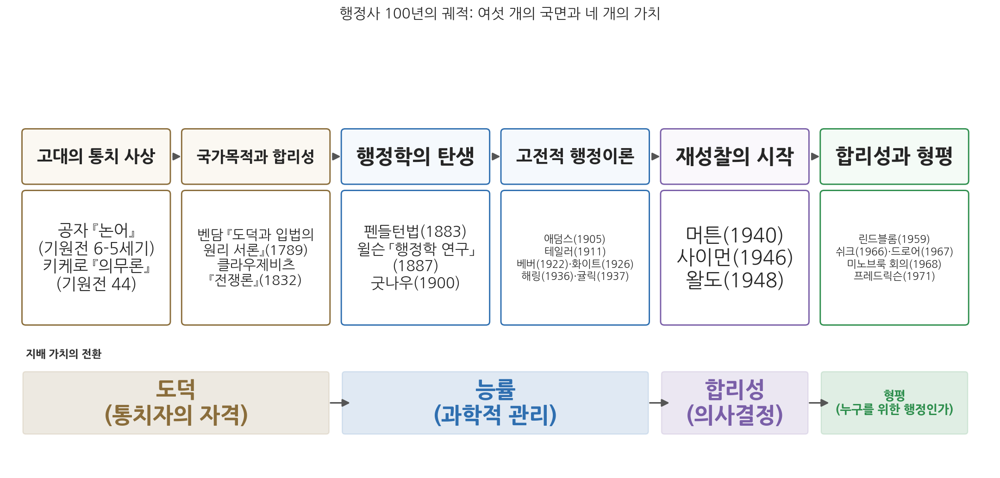
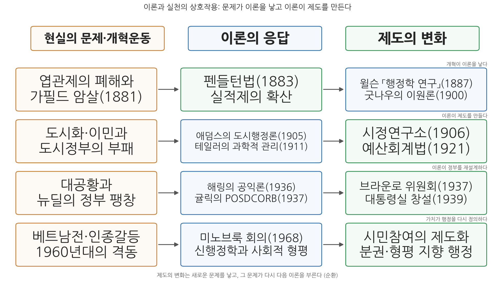

14주차 1차시. 행정의 발전과 시사점: 행정사 100년의 궤적
최종 수정: 2026-10-06 · 이 교재는 학기 중에도 계속 업데이트됩니다
이제는 헌법을 만드는 것보다 그것을 운영하는 것이 더 어려워지고 있다. (우드로 윌슨, 「행정학 연구」, 1887)
이 장에서 배우는 것
한 학기 동안 우리는 열여덟 편의 텍스트를 읽었다. 공자에서 드로어까지 시간으로는 2,500년이지만, 행정학이라는 학문의 역사는 1887년 윌슨의 논문에서 1968년 미노브룩 회의까지 대략 100년이다. 매주 한 사람씩 차례로 다루었기 때문에 사상가들이 서로 연결되지 않은 채 따로 정리되어 있을 가능성이 크다.
이 장의 목표는 그 사상가들을 하나의 시대순 구도 위에 다시 배열하는 것이다. 그렇게 보면 두 가지를 알 수 있다. 첫째, 각 사상가는 앞 시대가 남긴 문제에 답하면서 등장했다. 둘째, 그 답들의 밑바탕에 놓인 가치가 도덕에서 능률로, 능률에서 합리성으로, 합리성에서 형평으로 옮겨 갔다. 이 장을 마치면 어떤 사상가의 이름을 들어도 "그는 어떤 문제에, 어떤 가치로 답했는가"를 말할 수 있게 된다.
구체적으로 다음을 배운다.
- 각 사상가가 앞 국면의 어떤 문제에 어떤 논거로 답했는지 설명하기
- 시대별 지배 가치의 전환(도덕, 능률, 합리성, 형평)과 그 축적을 설명하기
- 정치행정 이원론, 관료제, 능률, 점증주의에 대한 흔한 오해를 바로잡기
- 개혁운동이 이론을 낳고 이론이 제도를 만든 상호작용을 한국 사례로 확인하기
- 공직윤리 법제, 재난 대응 조직, 적극행정, 디지털 정부와 인공지능, 시민참여, 공무원 인사 개혁을 고전의 언어로 읽기
이 장은 하나의 질문을 따라 전개된다. "열여덟 개의 텍스트는 어떻게 하나의 이야기가 되는가?"
1.1 기원에서 전환까지, 각 사상가의 논거와 문제의 연쇄를 시대순으로 다시 정리한다 → 1.2 그 과정에서 지배 가치가 도덕 → 능률 → 합리성 → 형평으로 바뀌고 서로 쌓이는 과정을 본다 → 1.3 이론과 실천이 서로를 만들어 온 상호작용을 한국의 사례로 확인한다 → 1.4 한국 행정에의 시사점을 정리하고, 디지털 정부와 인공지능, 시민참여, 공직 인사라는 오늘의 과제에 적용한다.
1.1 기원에서 전환까지: 전체 흐름 다시 보기

그림 14-1이 이 장 전체의 내용을 한눈에 정리한 것이다. 읽는 법은 이렇다. 위쪽 여섯 개의 상자는 우리가 한 학기 동안 살펴본 여섯 국면이고, 아래쪽 띠는 각 국면을 지배한 가치다. 이 그림에서 알 수 있는 것은 두 가지다. 첫째, 행정학의 탄생(1887) 이전에도 통치와 행정에 관한 사유는 이미 2천 년 넘게 쌓여 있었다. 둘째, 1887년 이후 100년 사이에 지배 가치가 세 번 바뀌었다. 능률에서 합리성으로, 합리성에서 형평으로다. 이 절은 각 사상가가 앞 국면의 어떤 문제에 어떤 논거로 답했는지를 따라가고, 핵심 대목만 원전으로 다시 확인한다.
고대의 통치 사상: 다스릴 자격을 묻다
2주차 1차시에서 읽은 공자(孔子, 기원전 551-479)를 떠올려 보자. 제나라 경공이 정치를 묻자 공자는 "임금은 임금답고 신하는 신하다워야 한다"고 답했고, 계강자가 정치를 묻자 이렇게 답했다.
"정치란 바르게 한다는 것입니다(政者, 正也). 선생께서 바른 도리로써 이끌어 주신다면 누가 감히 바르지 않은 일을 하겠습니까?"
"자기 자신이 올바르면 백성들은 명령을 내리지 않아도 자발적으로 행하고, 자기 자신이 올바르지 않으면 명령을 내려도 따르지 않는다(其身正, 不令而行, 其身不正, 雖令不從)."
무슨 말인가. 통치의 성패는 제도나 기술이 아니라 다스리는 사람의 도덕적 자격에 달려 있다는 것이다. 이를 착한 사람이 다스리면 된다는 낙관으로 읽으면 요점을 놓친다. 공자가 말한 것은 명령의 효력이 명령하는 사람에 대한 신뢰에서 나온다는 관찰이며, 같은 명령도 명령하는 사람이 바르지 않으면 따르지 않는다는 점에서 도덕은 통치의 장식이 아니라 통치가 작동하는 조건이다. 왜 중요한가. 여기에서 "공직은 아무나 맡는 자리가 아니라 자격을 갖춘 사람이 맡는 자리"라는 생각이 출발하기 때문이다. 뒤에서 보겠지만 이 생각은 2천 년 뒤 실적주의라는 제도의 사상적 출발점이 된다.
2주차 2차시의 키케로(Marcus Tullius Cicero, 기원전 106-43)는 같은 질문에 로마 공화정의 언어로 답했다. 그는 생애 마지막 해에 아들에게 보내는 편지 형식으로 『의무론』(기원전 44)을 썼다. 여기서 그는 플라톤의 조언을 이어받아 공직자가 시민에게 유익한 바에 시선을 고정하고 자신의 이익은 잊어야 하며, 공화국의 한 부분을 보호하느라 나머지를 소홀히 해서는 안 된다고 했다. 공화국의 경영은 후견과 같아서 후견인에게 유익한 바가 아니라 보호받는 자들에게 유익한 바에 비추어 수행되어야 한다는 것이다.
공직은 사익 추구의 수단이 아니라 맡겨진 신탁이라는 것, 그리고 공직자는 특정 집단이 아니라 전체를 섬겨야 한다는 것이다. 공자가 통치자의 내면(수신)을 물었다면, 키케로는 공직자의 책무(의무)를 물었다. 방향은 다르지만 두 사람 모두 행정을 도덕의 문제로 보았다는 점에서 같은 시대에 속한다.
두 사람의 답에는 공통된 강점과 공통된 한계가 있다. 강점은 공직의 정당성이 어디에서 오는가라는 질문을 처음으로 분명하게 세웠다는 점이다. 권력을 쥐었다는 사실만으로 다스릴 자격이 생기지는 않으며, 그 자격은 다스리는 사람의 품성과 공공을 향한 태도에서 나온다는 것이다. 한계는 그 자격을 누가 어떻게 확인하는가에 대한 답이 약하다는 점이다. 수신이 된 통치자가 나타나기를 기다리는 일과 수신이 된 사람을 골라내는 일은 다른 문제다. 2주차 1차시에서 보았듯 중국의 왕조들은 이 빈자리를 유교 경전에 대한 시험으로 관료를 뽑는 과거제로 메웠고, 한반도에서도 고려 광종 9년(958년)에 과거제가 도입되었다. 도덕의 언어가 선발의 제도로 옮겨 간 것이다. 1.3절에서 다룰 이론과 제도의 상호작용은 이처럼 고대에도 이미 나타나고 있었다.
국가목적과 합리성: 계산하는 정부라는 발상
3주차에서 우리는 근대로 건너뛰어 두 사람을 다루었다. 먼저 벤담(Jeremy Bentham, 1748-1832)은 정부가 무엇을 해야 하는지 판단하는 기준을 도덕적 직관이 아닌 계산에서 찾았다. 『도덕과 입법의 원리 서론』(1789)에서 그는 인간이 고통과 쾌락이라는 두 주인의 지배 아래 있다고 보고, 행위를 승인하거나 부인하는 근거를 그 행위가 당사자의 행복을 늘리는지 줄이는지에 두는 공리의 원리를 세웠다. 이 원리는 개인의 행위만이 아니라 정부의 모든 조치에도 적용된다. 정부의 조치를 "최대 다수의 최대 행복"이라는 잣대로, 곧 결과의 측정으로 판정하자는 주장이며, 이것이 오늘날 비용편익분석의 사상적 원천이고 13주차에서 다룬 예산개혁과 정책분석의 먼 출발점이다. 앞의 공자와 키케로가 누가 다스리는가를 물었다면, 벤담은 그 조치가 실제로 무엇을 낳는가를 물은 것이다.
클라우제비츠(Carl von Clausewitz, 1780-1831)는 정반대편에서 근대 국가의 합리성에 경고를 남겼다. 3주차 2차시에서 읽은 대목은 계획과 실행 사이의 간극에 관한 것이다. 『전쟁론』(1832)에서 그는 가장 단순한 것조차 어렵고 그 어려움들이 누적되어 일종의 마찰을 만든다고 썼고, 전쟁에서 얻어지는 정보의 상당 부분은 서로 모순되거나 거짓이라고 했다. 사전에 세운 완벽한 계획이 현장의 무수한 작은 사정들에 부딪혀 어긋나는 까닭이 여기에 있다. 이 통찰은 100여 년 뒤 사이먼의 제한된 합리성과 린드블롬의 점증주의에서 행정학의 언어로 다시 나타난다. 두 사람의 논거는 서로를 반박하지 않는다. 벤담은 판단의 기준을 어디에 두어야 하는지를, 클라우제비츠는 그 기준을 현실에 적용하는 과정에서 무엇이 어긋나는지를 말했다. 따라서 클라우제비츠를 계획은 소용없다는 주장으로 읽는 것은 오해이고, 그가 문제 삼은 것은 계획이 현실의 마찰을 겪지 않는다는 가정이다.
이 긴장은 오늘의 정책 결정에도 그대로 들어 있다. 대형 국책사업을 결정할 때 정부는 앞으로의 수요를 예측하고 비용과 편익을 화폐 단위로 환산해 비교한다. 벤담의 방식이다. 그러나 예측한 이용자 수가 실제와 어긋나거나, 공사 도중 설계가 바뀌어 사업비가 늘어나는 일도 드물지 않다. 클라우제비츠가 말한 정보의 불확실성과 실행의 마찰이다. 3주차 2차시에서 본 코로나19 초기의 마스크 공급 대응도 같은 구조였다. 정부는 출생연도에 따른 요일제를 임시로 도입했다가 수급이 안정되자 폐지했는데, 처음의 계획이 그대로 관철된 것이 아니라 현장의 반응을 보며 수단을 고쳐 나간 것이다. 두 사상가를 함께 읽으면 하나의 실천적 결론에 이른다. 계산을 버리지 않되 계산을 과신하지 않는 것, 곧 계획 단계에서부터 수정의 여지와 점검의 절차를 설계에 넣어 두는 것이다.
행정학의 탄생: 엽관제 개혁 이후
4주차 1차시에서 보았듯, 미국의 19세기는 엽관제(spoils system)의 시대였다. 선거에서 이긴 정당이 공직을 전리품처럼 나누어 가졌고, 그 폐해는 1881년 가필드 대통령이 낙심한 구직자에게 암살당하는 사건에서 극에 달했다. 1883년 펜들턴법이 공개경쟁시험과 실적에 기반한 공무원제를 만들었다. 주목할 점은 순서다. 제도 개혁(1883)이 먼저였고, 이론(1887)이 그 뒤를 따랐다.
그 이론이 우드로 윌슨(Woodrow Wilson, 1856-1924)의 「행정학 연구」다. 당시 무명의 젊은 강사였던 윌슨은 임용 개혁에서 멈추지 말고 정부의 조직과 운영 방법 전체를 연구하자고 제안했다.
"행정 연구의 목적은 첫째, 정부가 적절하고도 성공적으로 할 수 있는 일이 무엇인지 발견하고, 둘째, 그런 일들을 어떻게 하면 가능한 한 최고의 효율로, 그리고 돈이든 에너지든 가능한 한 최소의 비용으로 수행할 수 있는지를 밝혀내는 데 있다. (…) 행정의 영역은 사업의 영역이다. 행정적 질문들은 정치적 질문이 아니다. 정치는 행정에게 과업을 부여하지만, 그 직무들을 좌지우지하도록 허용되어서는 안 된다."
이 짧은 논문에 행정학이라는 학문의 기본 구성 요소가 들어 있다. 연구 대상(정부가 할 일과 그것을 잘하는 방법), 지향 가치(효율과 경제), 그리고 전략(행정을 당파 정치에서 떼어 내기)이다. 마지막 항목이 훗날 정치행정 이원론(politics-administration dichotomy)이라 불리게 되는데, 4-5주차에서 보았듯 이는 실적제를 지키기 위한 개혁운동의 정치 전략이기도 했다.
5주차 2차시의 프랭크 굿나우(Frank J. Goodnow, 1859-1939)는 이 구분을 정부 기능의 이론으로 정교화했다. 『정치와 행정』(1900)에서 그는 모든 정부 체제에 국가 의지의 표명(정치)과 그 의지의 집행(행정)이라는 두 기능이 있다고 보았다.
굿나우를 읽을 때 놓치기 쉬운 대목은 그가 이어서 덧붙인 말이다. 두 기능의 분화가 명확하더라도 그 기능들을 서로 분리된 기관에 배타적으로 배정하는 것은 불가능하다는 것이다. 그는 기능은 구분했지만 그 기능이 기관 단위로 깨끗이 나뉜다고는 보지 않았다. 미국 입법부는 특별법으로 행정 기능을 수행하고, 행정부는 거부권으로 정치 기능에 개입한다. 이원론은 처음 제시될 때부터 이미 단서 조항을 달고 있었던 셈이다. 흔히 이원론을 정치와 행정은 서로 간섭하지 말라는 불가침 선언으로 기억하지만, 굿나우의 결론은 오히려 정치의 행정 통제였다. 표명된 국가 의지가 실제로 집행되고 행정이 민주적 정당성 위에서 움직이려면 정치가 행정에 일정한 통제력을 가져야 한다고 보았기 때문이다. 이원론은 행정을 통제 밖에 두려는 선언이 아니라 민주주의 안에서 행정의 자리를 정하는 이론이었다.
이원론은 현실에 대한 서술이기 이전에 하나의 처방이었다. 당시 개혁가들이 맞서야 했던 상대는 공직을 선거의 보상으로 나누어 주는 정당 조직이었고, 행정이 기술적이고 사업적인 일이라면 그 일을 맡을 사람은 당에 대한 충성이 아니라 시험으로 확인한 능력으로 뽑아야 한다는 결론이 따라 나온다. 그래서 이원론은 실적제를 정당화하는 이론적 근거였다. 이원론이 후대에 사실과 다르다는 비판을 받고도 사라지지 않은 이유가 여기에 있다. 사실의 서술로서는 약점이 있었지만, 행정의 전문성을 당파적 개입에서 보호해야 한다는 처방으로서는 지금도 쓸모가 있기 때문이다. 이 처방이 오늘날 어떤 형태로 다시 논쟁이 되는지는 1.3절에서 미국의 최근 사례로 확인한다.
과학적 관리와 관료제: 능률의 확산
6주차 1차시에서 우리는 행정학이 형성된 배경인 도시를 보았다. 산업화와 이민으로 급격히 팽창한 도시, 부패한 정치 기계, 그리고 그에 맞선 진보주의 개혁운동이다. 이 국면에서 제인 애덤스(Jane Addams, 1860-1935)의 주장은 특별하다. 시카고 헐 하우스에서 빈민과 함께 살았던 그는 1905년의 연설 「도시 행정의 문제」에서 도시행정 실패의 원인을 건국자들의 인간관에서 찾았다. 초기 민주주의가 시민 사회의 역량에 대한 깊은 믿음이 아니라 막연한 도덕적 낭만주의에서 출발했고, 그래서 시민들에게는 정책의 혜택보다 그 과정에 참여할 권리가 더 중요했다는 것이다. 행정의 실패는 기술 부족이 아니라 시민을 통치의 대상으로만 본 데서 온다는 진단이며, 이 주장은 당시 주류가 되지 못했지만 60여 년 뒤 신행정학의 참여 요구로 다시 나타난다.
같은 시기 주류가 된 것은 프레더릭 테일러(Frederick W. Taylor, 1856-1915)의 과학적 관리였다. 6주차 2차시에서 읽은 1912년 하원 증언에서 그는 관리의 첫 번째 의무가 노동자들의 머릿속에 있던 전통 지식을 경영 측이 수집하고 기록하고 표로 만들어 법칙과 규칙, 수학 공식으로까지 환원하는 것이라고 설명했고, 과학적 관리는 불화가 아니라 조화가 규칙인 관리라고 주장했다. 일하는 방법에는 유일 최선의 방법(one best way)이 있고, 그것은 과학적 관찰로 발견할 수 있으며, 발견되면 모두에게 적용해야 한다는 것이다. 테일러를 노동자를 쥐어짜는 기법의 창안자로만 읽으면 그가 내세운 논거의 절반을 놓친다. 그의 논거는 경험으로 흩어져 있던 지식을 경영의 지식으로 옮기면 노사 모두에게 이익이 된다는 것이었다. 능률은 20세기 전반기에 행정 개혁의 가장 중요한 기준이 되었다. 인간을 생산 기계의 부품으로 본다는 비판은 지금도 유효하지만, 측정하고 표준화하고 개선한다는 발상 자체는 오늘날의 성과관리에까지 이어지고 있다.
애덤스와 테일러가 같은 시기에 나란히 놓인다는 사실은 생각해 볼 거리를 준다. 두 사람 모두 진보주의 시대의 개혁가였고 기존 질서의 낭비와 무능을 문제 삼았지만, 처방의 방향은 정반대였다. 애덤스는 시민이 통치 과정에 더 많이 참여해야 한다고 보았고, 테일러는 일하는 방법에 대한 판단을 전문가에게 모아야 한다고 보았다. 개혁가들이 능률의 언어를 더 쉽게 받아들인 것은 능률이 정당의 이해관계와 무관해 보이는 중립의 언어였고, 측정된 숫자가 누구의 편도 들지 않는 근거처럼 보였기 때문이다. 그렇지만 참여와 전문성 가운데 어느 쪽에 무게를 둘 것인가라는 이 시기의 갈림길은 이후 행정사에서 거듭 나타나며, 1.4절의 시민참여 사례들은 애덤스가 열어 둔 길이 오늘날 어떻게 이어지는지 보여 준다.
7주차 1차시의 막스 베버(Max Weber, 1864-1920)는 이 능률의 조직적 형태를 이념형(ideal type)으로 그려 냈다. 「관료제」(1922, 사후 출판)에서 그는 확고한 규칙에 따른 공적 의무, 직무 계층과 권위의 단계, 그리고 직위 취임을 개인적 관계가 아니라 비인격적이고 기능적인 목적에 복무하겠다는 의무의 수락으로 보는 근대적 충성을 관료제의 특징으로 들었다. 규칙, 계층, 문서, 전문 훈련, 전임성, 비인격성. 베버가 추출한 이 특징들은 관료제를 찬양하려는 것도 비난하려는 것도 아니었다. 이념형은 현실의 평균을 그린 것이 아니라 가장 완전하게 발달한 모습을 개념으로 정리한 것이므로, 현실의 관료제가 그와 다르다는 사실로는 베버를 반박할 수 없다.
7주차 2차시의 레너드 화이트(Leonard D. White, 1891-1958)는 이렇게 쌓인 지식을 최초의 교과서로 묶었다. 1926년의 『행정학 입문』 서문에서 그는 신생 학문의 기본 입장을 네 가지 가정으로 선언했다. 행정은 어느 수준의 정부에서든 본질이 같은 단일한 과정이고, 연구는 법이 아니라 관리의 기반에서 출발해야 하며, 행정을 과학으로 전환하려는 이상은 실현 가능하고 가치가 있다는 것이다. 교과서가 나왔다는 것은 학문이 제도화되었다는 뜻이다. 윌슨의 제안(1887)에서 화이트의 교과서(1926)까지 40년 만에, 행정학은 대학의 강좌와 전공과 교재를 갖춘 분과가 되었다.
이 무렵까지 형성된 행정학의 기본 신념은 네 가지다. 첫째, 정치와 행정은 구분된다(윌슨, 굿나우). 둘째, 좋은 행정의 기준은 능률이다(윌슨, 테일러). 셋째, 행정에는 과학적으로 발견할 수 있는 원리가 있다(테일러, 화이트). 넷째, 그 원리를 체현하는 조직 형태는 규칙과 계층에 기초한 관료제다(베버). 훗날 이 네 신념을 묶어 고전적 행정학 또는 정통 행정학이라 부르게 된다. 다음 두 국면은 이 신념들이 하나씩 검증을 받는 과정이다. 뉴딜의 행정국가는 첫째 신념을, 머튼은 넷째 신념을, 사이먼은 셋째 신념을, 왈도는 둘째 신념을 문제 삼는다.
행정국가: 재량의 발견과 이원론의 붕괴
1930년대의 대공황과 뉴딜은 정부의 기능을 급격히 확장시켰다. 알파벳 약칭으로 불리는 기관들이 잇따라 만들어졌고, 의회는 일반 원칙만 정한 법률을 만들고 세부는 행정에 맡겼다. 이 현실 앞에서 "행정은 정치가 아니다"라는 명제는 유지되기 어려웠다. 9주차 1차시의 펜들턴 해링(E. Pendleton Herring, 1903-2004)이 그 붕괴를 정면으로 이론화했다.
"의회는 일반 원칙을 천명한 법률을 제정한다. (…) 법률의 문구가 그의 범위를 한정하지만, 그 재량의 여지 안에서 그는 국가 목적에 대한 자신의 해석을 기록해야 한다. (…) 공익은 법을 집행하는 행정가를 인도하는 기준이다."
관료는 법을 기계적으로 집행하는 존재가 아니라, 재량의 공간 안에서 공익을 해석하는 존재라는 것이다. 이 순간 행정은 다시 정치적인 것이 되었다. 다만 이를 관료가 정치인처럼 행동해도 된다는 뜻으로 읽으면 오해다. 무너진 것은 행정에는 재량과 가치 판단이 없다는 사실 명제이지, 관료는 당파 정치에 중립을 지켜야 한다는 규범 명제가 아니다. 오히려 행정 안에 판단이 있음을 인정해야 비로소 그 판단에 대한 책임을 물을 수 있다는 것이 해링의 논지다. 그는 그 해석의 기준인 공익이 측량할 수 없는 심리적 개념이라는 것도 정직하게 인정했다. 관료는 "눈앞의 함정을 밝혀 줄 빛이 거의 없는 채로 자신의 별을 따라가야" 한다.
해링의 발견이 왜 중요한지는 오늘의 법령을 보면 알 수 있다. 한국의 법률도 "공공복리", "공익상 필요", "상당한 이유" 같은 열린 문구로 행정기관에 판단을 맡기는 경우가 많고, 일선 공무원은 인허가와 단속과 보조금 심사의 현장에서 그 열린 문구를 날마다 구체적인 판단으로 바꾼다. 9주차 1차시에서 보았듯 재량에는 양쪽에 위험이 있다. 재량을 남용하면 특혜와 부패가 되고, 재량을 회피하면 복지부동과 소극행정이 된다. 해링 이후의 행정학은 재량을 없애는 방법이 아니라 재량을 책임 있게 쓰게 하는 방법을 찾는 쪽으로 질문을 바꾸었다. 이 질문에 대한 한국의 제도적 답변인 적극행정 제도는 1.3절에서 자세히 다룬다.
한편 확장된 정부를 어떻게 조직할 것인가라는 실무 문제에는 9주차 2차시의 루서 귤릭(Luther Gulick, 1892-1993)이 답했다. 그는 브라운로 위원회에 참여해 대통령의 관리 기구를 설계한 인물이기도 하다. 「조직이론에 관한 노트」(1937)에서 그는 분업이 조직이 존재하는 이유 그 자체이고, 조직 이론은 분업된 단위들 위에 부과되는 조정(co-ordination)의 구조에 관한 것이라고 보았다. 최고책임자의 일은 기획, 조직화, 인사, 지휘, 조정, 보고, 예산, 곧 POSDCORB로 정리했다. 분업과 조정, 명령통일, 통솔범위. 귤릭은 조직 설계의 원리들을 정리해 고전적 조직이론의 정점을 이루었다. 그러나 바로 그 "원리"라는 말이 다음 시대의 비판 대상이 된다.
해링과 귤릭은 같은 행정국가를 서로 다른 각도에서 보았다. 해링이 본 것은 관료 한 사람 한 사람이 재량 속에서 공익을 해석해야 하는 상황이었고, 귤릭이 본 것은 수많은 기관과 부서를 하나의 방향으로 움직이게 해야 하는 상황이었다. 앞의 것은 행정 책임의 문제이고, 뒤의 것은 행정 조정의 문제다. 두 문제는 오늘의 정부에서도 함께 나타난다. 감염병이나 대형 재난처럼 여러 부처의 소관이 겹치는 문제가 생기면, 누가 최종 판단을 내리는가(책임)와 여러 기관의 활동을 어떻게 맞물리게 하는가(조정)가 동시에 물어진다. 정부가 바뀔 때마다 재난 대응 기구나 정책 조정 기구의 위치와 권한이 다시 논의되는 것은 귤릭이 정리한 조정의 문제가 아직 최종 해답을 얻지 못했기 때문이다. 1.3절에서 보게 될 국민안전처의 신설과 폐지가 그 한 사례다.
행태주의와 재성찰: 정통이 비판받다
1940년대에 들어서면 고전기의 확신들이 안팎에서 검증을 받게 된다. 먼저 10주차 1차시의 로버트 머튼(Robert K. Merton, 1910-2003)이 베버의 관료제를 반대편에서 검토했다. 베버가 관료제가 이루는 것(정밀성, 신뢰성, 효율성)을 보았다면, 머튼은 같은 구조가 만들어 내는 병리를 보았다.
머튼은 「관료제의 구조와 성격」(1940)에서 과거에 성공적으로 적용된 훈련이 변화된 조건에서는 무능이 될 수 있고, 원래 수단이던 규칙 준수가 그 자체로 목적으로 변형되는 일이 일어난다고 보았다. 곧 훈련된 무능(trained incapacity)과 목표 대치(goal displacement)다. 관료제의 경직과 형식주의는 나쁜 개인의 일탈이 아니라, 신뢰성을 확보하려는 바로 그 장치들이 낳는 구조적 결과라는 것이다. 규정만 따지느라 민원인을 돕지 못하는 창구의 모습은 규칙을 절대화하도록 훈련된 조직의 정상 작동일 수 있다. 머튼이 베버를 뒤집은 것으로 이해하면 오해다. 베버가 본 정밀성과 신뢰성은 머튼도 인정하는 관료제의 성취이고, 머튼은 그 성취를 가능하게 한 구조가 치르는 대가를 함께 계산했을 뿐이다.
머튼의 분석은 오늘날 성과관리의 부작용을 설명하는 데에도 자주 쓰인다. 기관의 성과를 몇 개의 지표로 평가하면, 조직은 지표가 측정하는 것에 힘을 모으고 측정하지 않는 것을 소홀히 하게 된다. 지표는 본래 목적을 확인하기 위한 수단이었는데, 지표의 달성이 목적의 자리를 차지하는 것이다. 13주차 1차시에서 보았듯 한국의 성과계획서 제도를 두고 성과지표가 달성하기 쉬운 것으로 채워진다는 비판이 반복되는 것도 같은 구조다. 머튼의 교훈은 규칙이나 지표를 없애라는 것이 아니다. 규칙과 지표가 본래 무엇을 위해 만들어졌는지를 조직이 계속 되묻게 하는 장치가 필요하다는 것이다.
10주차 2차시의 허버트 사이먼(Herbert A. Simon, 1916-2001)은 더 근본적인 비판을 제기했다. 귤릭이 정리한 행정의 원리들이 과학의 자격을 갖추지 못했다는 것이다.
사이먼은 「행정의 격언들」(1946)에서 격언이 거의 언제나 서로 모순되는 짝으로 존재하며("돌다리도 두들겨 보고 건너라"와 "망설이는 자는 실패한다"), 과학적 이론은 무엇이 참인지뿐 아니라 무엇이 거짓인지도 말해 주어야 한다고 했다. 행정이론의 명제들도 거의 모든 원리마다 똑같이 그럴듯한 모순 원리를 하나씩 찾을 수 있다는 것이다. 전문화의 원리는 명령통일의 원리와 충돌하고 통솔범위 축소의 원리는 결재 단계 축소의 원리와 충돌하는데, 어느 쪽을 따를지 알려 주는 이론이 없다. 사이먼의 논거는 원리들이 틀렸다는 것이 아니라 반박될 수조차 없다는 것이다. 아무것도 금지하지 않는 명제는 이론이 아니기 때문이다. 그렇다고 귤릭의 유산을 전부 부정한 것은 아니다. 전문화도 명령통일도 통솔범위도 조직 진단의 기준으로는 유효하며, 버려지는 것은 조건 없이 타당한 법칙이라는 주장뿐이다. 사이먼은 이 비판 위에서 의사결정을 행정학의 새 중심 개념으로 세우고, 완전한 합리성 대신 제한된 합리성(bounded rationality) 아래에서 만족화(satisficing)하는 행정인의 모습을 그렸다.
11주차의 드와이트 왈도(Dwight Waldo, 1913-2000)는 또 다른 방향에서 정통을 비판했다. 정치이론가였던 그는 『행정국가』(1948)에서, 스스로 사실만 다룬다고 믿었던 행정학이 실은 하나의 정치이론이었음을 폭로했다. 특히 능률이라는 최고 가치가 실은 특정한 시대의 신념이라는 것이다. 그 뒤 1965년의 회고 논문에서 이 논점을 다시 검토했다.
왈도는 1965년의 「행정국가 다시 보기」에서 능률이 그 자체로 가치일 수 없다는 자신의 앞선 주장이 분석의 수준에서는 옳았지만 심리적·사회적 현상을 간과한 것이었다고 인정했다. 어떤 사회가 능률을 수단적 가치 때문에 열심히 배양하다 보면 시간이 흐르면서 그것이 가치 그 자체가 될 수 있다는 것이다. 능률은 "무엇을 위한 능률인가"라는 질문 없이는 성립하지 않는 상대적 개념인데, 미국 행정학은 그것을 검토 없이 절대화해 왔다는 비판이다. 왈도를 능률을 버리자고 한 사람으로 읽는 것은 오해다. 그는 능률의 위상이 낮아졌어도 그 질문은 사라지지 않았다고 보았다. 민주주의와 행정을 화해시켜야 한다는 그의 문제의식은 그가 후원한 1968년 미노브룩 회의를 거쳐 신행정학으로 이어진다.
세 비판은 겨냥한 층위가 서로 다르다. 머튼은 조직 구조의 층위에서 관료제의 장치가 의도하지 않은 결과를 낳는다는 것을 보였다. 사이먼은 지식의 층위에서 행정의 원리가 검증 가능한 이론이 아니라는 것을 보였다. 왈도는 가치의 층위에서 능률이라는 기준 자체가 특정한 정치적 신념이라는 것을 보였다. 세 비판이 동시에 제기되면서 고전적 행정학의 확신은 구조, 지식, 가치의 세 방향에서 도전을 받았다. 그 뒤에 행정학이 택한 길이 하나가 아니었던 것도 이 때문이다. 사이먼의 비판을 이어받은 쪽은 의사결정과 정책분석으로, 왈도의 비판을 이어받은 쪽은 민주행정과 형평으로 나아갔다. 다음 국면의 세 갈래는 이 분화의 결과다.
신행정학, 점증주의, 정책분석: 세 갈래의 전환
1950-60년대의 마지막 국면에서 행정학은 세 갈래로 갈라지며 확장된다.
첫째 갈래는 의사결정의 현실주의다. 12주차 1차시의 찰스 린드블롬(Charles E. Lindblom, 1917-2018)은 「'우왕좌왕하기'의 과학」(1959)에서 합리적·총체적 결정 모형이 복잡한 정책 문제에서는 아예 작동할 수 없다고 논증했다. 현실의 결정자는 많은 목표를 미리 분명히 세우고 최적의 수단을 찾는 것이 아니라, 경험과 점진적 비교를 통해 덜 나쁜 대안을 찾아가며 필요하면 목표 자체를 조금씩 수정한다. 기본 전제에서 조금씩 바꾸어 가는 연속적 제한 비교, 곧 점증주의(incrementalism)는 실패의 미봉책이 아니라 인간의 인지적 한계와 민주정치의 구조를 반영한 실천 가능한 방법이라는 것이다. 점증주의를 변화에 소극적인 현상 유지론으로 읽으면 오해다. 린드블롬이 한 일은 복잡한 공공문제에서 결정자가 실제로 쓰는 방법을 서술하고, 그것이 교과서의 이상보다 흔히 더 나은 결과를 낸다고 변호한 것이다.
둘째 갈래는 합리적 분석의 제도화다. 13주차 1차시의 앨런 쉬크(Allen Schick)는 「PPB로 가는 길」(1966)에서 예산개혁의 역사를 통제, 관리, 기획의 세 단계로 정리하고 개혁들의 차이를 예산 편성의 정신이 정당화에서 분석으로 이동한다는 하나의 진술로 요약했다.
셋째 갈래는 그 분석에 대한 비판적 종합이다. 13주차 2차시의 예헤츠켈 드로어(Yehezkel Dror, 1928-2026)는 「정책분석가: 정부 서비스의 새로운 전문직 역할」(1967)에서 시스템 분석이 계량화에 집착하고 정치적 실현 가능성을 무시한다고 비판하며, 정치와 가치를 분석의 중심에 되돌려 놓는 새 전문직을 제안했다. 그러면서도 분석을 버리지는 않았다.
그리고 이 모든 갈래 위에서 규범의 전환이 왔다. 1968년, 왈도가 후원한 미노브룩 회의에 모인 젊은 학자들은 베트남 전쟁, 인종 갈등, 빈곤이라는 시대의 문제에 행정학이 답하지 못한다고 반성했다. 12주차 2차시에서 다룬 조지 프레드릭슨(H. George Frederickson, 1934-2020)이 그 문제의식을 정식화했다.
"행정학의 논리적 근거는 거의 항상 더 나은, 곧 더 능률적이거나 경제적인 관리였다. 신행정학은 이 고전적인 목표와 근거에 사회적 형평성을 추가한다. 이 서비스가 사회적 형평성을 증진하는가라는 질문을 더하는 것이다. (…)"
능률성과 경제성이라는 두 기둥 옆에 사회적 형평성(social equity)이라는 제3의 기둥을 세운 것이다. 프레드릭슨이 한 일은 능률과 경제성을 버리는 것이 아니라 거기에 질문 하나를 더하는 것이었다. 흥미로운 것은 이 "새로운" 행정학이 스스로 인정했듯 아주 오래된 질문의 부활이라는 점이다. 행정은 누구를 위해 존재하는가. 공자와 키케로가 물었던 바로 그 질문이다.
여섯 국면을 잇는 문제의 연쇄
각 국면의 답은 그 시대의 문제를 일정하게 해결했지만 동시에 다음 시대의 문제를 만들었다. 실적제는 엽관제의 부패를 줄였지만 경직된 관료제를 키웠고, 능률의 추구는 낭비를 줄였지만 "무엇을 위한 능률인가"라는 질문을 가렸다. 따라서 행정사는 한 번의 직선적 진보가 아니라 서로 이어진 문답이다. 다음 절에서는 같은 연쇄를 가치의 변화라는 관점에서 다시 읽는다.
1.2 시대별 가치의 전환: 도덕에서 형평으로
이제 같은 과정을 가치의 관점에서 다시 요약해 보자. 그림 14-1의 아래쪽 띠가 보여 주듯, 행정을 판단하는 지배 가치는 네 차례 달라졌다.
도덕의 시대. 공자와 키케로에게 좋은 행정이란 좋은 사람의 행정이었다. 통치자의 수신과 공직자의 의무가 판단 기준이었고, 제도는 그 도덕을 실현하는 수단이었다. 이 전통은 결코 낡은 것이 아니다. 엽관제 개혁운동이 "공직은 공적 신탁"이라는 도덕적 언어로 국민을 설득했다는 것을 기억하자.
도덕의 가치가 오늘날 어떤 형태로 살아 있는지는 한국의 공직윤리 법제가 잘 보여 준다. 2015년 3월 제정되어 2016년 9월 28일 시행된 「부정청탁 및 금품등 수수의 금지에 관한 법률」(청탁금지법)은 공직자에 대한 부정청탁을 금지하고, 직무 관련 여부와 관계없이 같은 사람에게서 1회 100만 원 또는 한 회계연도에 300만 원을 넘는 금품을 받으면 형사처벌하도록 했다. 2021년 5월 제정되어 2022년 5월 19일 시행된 「공직자의 이해충돌 방지법」은 공직자가 지켜야 할 열 가지 행위 기준을 정하고, 개발 사업과 관련된 부동산을 보유하거나 매수한 경우 이를 신고하게 하는 등 직무와 사적 이익이 맞닿는 지점을 규율한다. 시행 당시 적용 대상은 1만 5천여 개 기관의 공직자 약 200만 명이었다.
이 두 법을 공자와 키케로의 언어로 읽으면 흥미로운 대비가 드러난다. 공자는 "자기 자신이 올바르면 명령하지 않아도 행해진다"고 하여 도덕을 통치자의 내면에 두었다. 키케로는 공직을 후견에 비유하며 후견인이 자기 이익이 아니라 보호받는 자의 이익을 따라야 한다고 했다. 이해충돌 방지 제도는 키케로의 후견 논리를 그대로 법조문으로 옮긴 것에 가깝다. 공직자가 사적 이익과 공적 직무 사이에 놓이는 순간을 미리 정의하고, 그 순간에 신고하고 회피하게 하는 것이다. 다만 법이 도덕을 대신할 수는 없다. 규정은 금지된 행위의 목록을 정할 수 있을 뿐, 공직자가 목록에 없는 상황에서 어떻게 판단할지까지 정해 주지는 못한다. 도덕의 시대가 남긴 과제, 곧 공직자 개인의 내면화된 책임감을 어떻게 기를 것인가는 법제화 이후에도 여전히 남아 있다.
능률의 시대. 윌슨에서 귤릭까지, 1887년에서 1937년까지의 반세기는 능률이 지배했다. 정부가 하는 일을 최소 비용으로 잘 해내는 것이 좋은 행정이었고, 그 방법은 과학적 관찰과 원리의 발견이었다. 도덕에서 능률로의 전환은 판단의 초점이 사람의 자격에서 일의 방법으로 옮겨 간 것이라 말할 수 있다. 좋은 사람을 뽑는 문제(실적제)가 어느 정도 해결되자 뽑힌 사람들이 일하는 방식이 문제로 떠올랐다.
능률의 가치는 오늘날 성과관리와 역량 중심 인사의 형태로 이어진다. 한국은 2006년 7월 1일 고위공무원단 제도를 시행하면서, 실·국장급 공무원을 부처 단위가 아니라 범정부 차원에서 관리하고 고위공무원단에 들어가려면 역량평가를 통과하도록 했다. 직급과 연공보다 직무를 수행하는 역량을 기준으로 삼겠다는 설계다. 2007년 국가재정법 시행과 함께 도입된 성과계획서와 성과보고서 제도도 같은 계열에 있다. 각 부처는 성과 목표와 지표를 정하고 그 달성도를 보고해야 한다. 테일러가 공장에서 시도했던 측정과 표준화의 발상이 한 세기 뒤 정부 전체의 관리 방식이 된 것이다. 그러나 앞에서 머튼을 통해 보았듯, 측정이 정교해질수록 측정되지 않는 것이 소홀해지는 문제도 함께 커진다. 능률은 여전히 필요하지만, 그것만으로 좋은 행정을 판별할 수는 없다는 것이 이 시대 이후의 교훈이다.
합리성의 시대. 사이먼 이후의 20년은 합리성이 지배했다. 다만 이 합리성은 이중적이다. 한편으로 사이먼과 린드블롬은 인간 합리성의 한계를 밝혔고, 다른 한편으로 쉬크가 기록한 PPBS와 드로어의 정책분석은 그 한계 안에서 가능한 최대의 분석적 합리성을 제도화하려 했다. 능률에서 합리성으로의 전환은 초점이 집행의 방법에서 결정의 질로 옮겨 간 것이다.
한국에서 합리성의 대표적인 제도는 1999년 도입된 예비타당성조사다. 13주차 2차시에서 보았듯 이 제도는 경제성 분석을 기본으로 삼되 정책성과 지역균형발전을 함께 평가하도록 설계되었다. 그런데 이 제도는 정치적 결정에 의해 적용이 면제되기도 한다. 2019년 1월 29일 정부는 국가균형발전을 위해 17개 시·도가 신청한 사업 가운데 23개 사업, 총 24조 1천억 원 규모에 대해 예비타당성조사를 면제한다고 발표했다. 정부는 지역 경제 활성화와 신속한 추진을 이유로 들었고, 반대편에서는 분석 절차를 건너뛰는 것이 재정 규율을 약화시킨다고 비판했다. 이 논쟁은 린드블롬과 드로어를 함께 떠올리게 한다. 분석이 모든 것을 결정할 수 없다는 점에서는 린드블롬이 옳고, 분석을 건너뛴 결정이 무엇을 놓치는지 따져야 한다는 점에서는 드로어의 요구가 유효하다. 합리성의 시대가 남긴 과제는 분석과 정치적 판단이 각각 어디까지를 맡을 것인지 그 경계를 투명하게 정하는 일이다.
형평의 시대. 그리고 1968년 이후, 신행정학은 "누구를 위하여"라는 질문을 전면에 세웠다. 능률적이고 합리적인 행정이 힘없는 이들에게 체계적으로 불리하다면 그것은 좋은 행정인가. 프레드릭슨의 답은 아니라는 것이었다. 합리성에서 형평으로의 전환은 초점이 결정의 질에서 결과의 분배로 옮겨 간 것이다.
형평의 질문이 한국 행정에서 어떻게 제기되는지를 보여 주는 사례가 2014년 2월의 이른바 송파 세 모녀 사건이다. 서울 송파구의 한 단독주택 지하에 세 들어 살던 어머니와 두 딸이 생활고 끝에 스스로 목숨을 끊은 채 발견되었고, 집주인에게 남긴 봉투에는 현금 70만 원과 함께 밀린 공과금이라는 메모가 들어 있었다. 이 사건은 복지 제도가 존재하더라도 도움이 필요한 사람에게 닿지 못하는 사각지대가 있다는 사실을 드러냈다. 그 뒤 국민기초생활보장법과 긴급복지지원법이 개정되고 「사회보장급여의 이용·제공 및 수급권자 발굴에 관한 법률」이 제정되었다. 새 법의 이름에 들어 있는 "발굴"이라는 말이 이 변화의 성격을 보여 준다. 시민이 신청하기를 기다리는 행정에서, 도움이 필요한 사람을 행정이 먼저 찾아 나서는 행정으로 방향을 바꾸겠다는 것이다.
프레드릭슨의 관점에서 이 사례는 두 가지를 시사한다. 첫째, 형평은 제도의 설계만이 아니라 전달의 단계에서도 따져야 한다. 같은 급여 기준이 모두에게 적용되더라도, 정보와 신청 능력이 부족한 사람은 그 혜택에서 체계적으로 멀어진다. 둘째, 능률의 기준만으로는 이 문제가 잘 보이지 않는다. 신청한 사람을 빠르고 정확하게 처리하는 행정은 능률적이지만, 신청하지 못한 사람은 그 평가에 처음부터 나타나지 않는다. "이 서비스가 사회적 형평성을 증진하는가"라는 질문은 바로 이 보이지 않는 사람들을 평가의 시야에 넣으라는 요구다. 12주차 2차시에서 본 균형인사 제도가 공직의 구성에서 형평을 추구한다면, 복지 사각지대 발굴은 서비스의 전달에서 형평을 추구하는 사례라 할 수 있다.
가치의 전환은 교체가 아니라 축적이다. 새 가치가 등장했다고 옛 가치가 폐기된 적은 없다. 오늘의 행정은 여전히 공직 윤리를 요구받고, 성과와 비용으로 평가받으며, 근거에 기반한 결정을 요구받고, 그 결과의 공정성을 검증받는다. 전환을 낡은 가치가 새 가치로 바뀌었다는 뜻으로 읽으면 형평이 능률을 밀어냈다고 오해하게 된다. 왈도가 능률의 위상이 낮아졌어도 그 질문은 사라지지 않았다고 본 것이 이 점을 보여 준다. 그래서 현대 행정가는 네 가치의 긴장을 동시에 관리해야 하는 사람이 되었다.
네 가치가 한 사안 안에서 동시에 작동하는 모습은 3주차 2차시에서 본 코로나19 긴급재난지원금 논쟁에서 확인할 수 있다. 지원금은 전 국민 지급으로 시작했으나 형평성 논란과 재정 부담에 부딪혀 이후 선별 지원으로 조정되었다. 이 과정에서 제기된 주장들을 네 가치로 나누어 보면 다음과 같다. 전 국민에게 한꺼번에 지급하면 대상자를 가려내는 데 드는 시간과 행정 비용을 줄일 수 있다는 주장은 능률의 언어다. 지원이 소비를 얼마나 늘리고 어떤 계층의 소득을 얼마나 보전했는지 자료로 따져야 한다는 주장은 합리성의 언어다. 피해가 큰 계층에 더 많이 지원해야 한다는 주장은 형평의 언어다. 그리고 지급 기준이 공정하게 정해지고 집행되는지에 대한 신뢰, 곧 공직자가 특정 집단이 아니라 전체를 위해 판단하는가라는 물음은 도덕의 언어다. 어느 한 가치만으로는 이 정책을 평가할 수 없었다. 행정사를 가치의 축적으로 읽는다는 것은 이처럼 하나의 정책 앞에서 네 가지 물음을 함께 던질 수 있게 된다는 뜻이다.
1.3 이론과 실천의 상호작용: 개혁이 이론을 낳고 이론이 제도를 만든다
행정이론은 학자의 사색만으로 만들어지지 않았다. 윌슨은 어느 시대의 철학이란 "그 시대의 정신이 추상적 사유 속에 표현된 것에 불과"하다고 썼다. 행정이론도 마찬가지여서, 시대의 문제가 이론을 요구하고, 이론이 다시 제도를 바꾸고, 바뀐 제도가 새로운 문제를 낳는 순환이 행정사의 기본 구조다.

그림 14-2를 읽는 법은 이렇다. 각 줄은 하나의 순환 사례이고, 상자의 색이 그 성격을 나타낸다. 주황색은 현실의 문제, 파란색은 이론의 응답, 초록색은 제도의 변화다. 이 그림에서 알 수 있는 것은 문제, 이론, 제도의 등장 순서가 매번 같지 않다는 점이다. 첫째 줄에서는 제도가 이론보다 먼저 왔고, 둘째와 셋째 줄에서는 이론이 제도를 이끌었다.
사례 1: 개혁이 이론을 낳다. 엽관제의 폐해와 가필드 암살(1881)이라는 충격이 펜들턴법(1883)이라는 제도를 만들었고, 그 제도의 성공을 이어 가려는 고민 속에서 윌슨의 논문(1887)과 굿나우의 이론(1900)이 나왔다. 행정학은 개혁운동에서 비롯된 학문이다.
사례 2: 이론이 제도를 만들다. 시정연구소 운동과 테일러의 과학적 관리가 제공한 측정과 표준화의 언어는 예산이라는 제도에 반영되어 1921년 예산회계법으로 이어졌다. 쉬크의 표현을 빌리면 "예산 개혁은 그것이 유래한 시대의 흔적"을 지닌다.
사례 3: 이론이 정부를 재설계하다. 뉴딜로 팽창한 정부 앞에서 해링은 공익과 재량의 이론을, 귤릭은 조직과 조정의 이론을 내놓았다. 귤릭이 참여한 브라운로 위원회(1937)의 권고는 1939년 대통령실 창설로 이어졌다. "대통령에게는 도움이 필요하다"는 이론적 진단이 정부의 실제 구조를 바꾼 것이다.
사례 4: 가치가 행정을 다시 정의하다. 1960년대의 격동은 미노브룩 회의(1968)를 낳았고, 신행정학의 형평과 참여의 언어는 이후 시민참여의 제도화와 분권 개혁의 규범적 기초가 되었다.
네 사례를 비교하면 순환의 출발점에 대개 충격적인 사건이나 누적된 실패가 있었다는 공통점이 보인다. 가필드 암살, 도시 정치의 부패, 대공황, 1960년대의 사회적 격동이 그것이다. 평상시에는 기존 제도가 관성대로 움직이고 이론의 제안은 받아들여지기 어렵다. 위기가 와서 기존 제도의 한계가 분명해질 때, 준비되어 있던 이론이 제도 개혁의 언어로 채택된다. 이 구조는 미국만의 것이 아니므로, 아래에서 한국의 두 사례를 같은 틀로 읽어 본다.
한국에서 확인하는 순환
사례 5: 재난이 조직을 바꾸다. 2014년 4월 16일의 세월호 참사는 한국의 재난 대응 체계에 대한 근본적인 문제 제기로 이어졌다. 재난 대응 체계 전반에 대한 비판이 제기되었고, 그 대응으로 같은 해 11월 19일 국민안전처가 출범했다. 안전행정부의 안전 관리 기능, 소방방재청, 그리고 해양수산부 소속 외청이던 해양경찰청을 하나로 묶은 조직이었다. 흩어진 기능을 한 기관에 모아 지휘를 일원화하겠다는 설계는 귤릭이 말한 조정의 구조, 곧 분업된 단위들 위에 하나의 조정 체계를 세우는 발상 그대로다. 그러나 국민안전처는 2017년 정부조직 개편에서 폐지되었고, 재난 대응 기능은 행정안전부로 넘어갔다. 문재인 정부는 청와대가 재난 대응의 컨트롤타워임을 밝히고 그 역할을 청와대 위기관리센터와 행정안전부에 맡겼다.
이 짧은 이력은 사이먼의 격언 비판을 떠올리게 한다. "기능을 한곳에 모아야 조정이 된다"는 주장과 "각 기능의 전문성은 고유한 조직에서 길러진다"는 주장은 둘 다 그럴듯하지만, 서로 반대의 조직 설계를 권한다. 어느 쪽이 옳은지는 원리가 아니라 구체적인 조건에 대한 검증으로 가려야 한다. 2022년 10월 29일 서울 이태원에서 159명이 숨진 참사가 일어나자, 재난 대응 체계와 책임 소재의 문제는 다시 제기되었다. 2024년 5월 2일 「10·29 이태원참사 피해자 권리보장과 진상규명 및 재발방지를 위한 특별법」이 국회를 통과해 같은 달 21일 공포·시행되었다. 조직을 통합하거나 분리하는 것만으로는 재난 대응의 문제가 해결되지 않으며, 현장의 정보가 결정권자에게 전달되는 과정과 책임을 묻는 절차까지 함께 설계해야 한다는 것이 이 연속된 경험이 남긴 과제다. 클라우제비츠가 말한 정보의 불확실성과 마찰이 가장 크게 작용하는 곳이 재난 현장이라는 점도 기억할 만하다.
사례 6: 재량의 이론이 제도가 되다. 두 번째 사례는 해링이 제기한 재량의 문제가 한국에서 제도로 정착한 과정이다. 공무원이 감사와 징계를 두려워해 규정에 명시된 일만 하고 새로운 판단을 피하는 현상, 흔히 소극행정이나 복지부동이라 부르는 문제는 오래전부터 지적되어 왔다. 머튼의 언어로 말하면 규칙 준수가 목적이 되어 버린 목표 대치이고, 해링의 언어로 말하면 재량의 회피다. 정부는 2019년 적극행정 운영규정(대통령령)을 만들어 이 문제에 제도로 대응했다. 공무원이 공공의 이익을 위해 성실하고 적극적으로 일한 결과에 잘못이 있더라도 고의나 중대한 과실이 없으면 징계 책임을 면제하거나 줄여 주고, 규정이 불분명하거나 선례가 없어 판단이 어려울 때는 감사 기구에 미리 자문을 구해 그에 따라 처리하면 책임을 면하게 하는 사전컨설팅 제도를 두었다. 2021년 3월 23일 시행된 행정기본법은 제4조에서 "행정은 공공의 이익을 위하여 적극적으로 추진되어야 한다"고 규정해 이 원칙을 법률의 수준으로 끌어올렸다.
이 사례에서 순환의 순서를 확인해 보자. 소극행정이라는 현실의 문제가 먼저 있었고, 재량을 책임 있게 행사하게 하는 방법에 관한 이론적 논의(해링의 공익 해석, 프리드리히와 파이너의 행정 책임 논쟁)가 그 문제를 설명하는 언어를 제공했으며, 그 언어가 면책과 사전컨설팅이라는 제도로 구체화되었다. 동시에 새 제도는 새 문제를 낳을 수 있다. 면책의 범위를 넓히면 적극성을 핑계로 한 자의적 판단을 어떻게 걸러 낼지가 다시 문제가 된다. 재량을 없앨 수도, 무제한으로 허용할 수도 없다는 해링의 딜레마는 제도화 이후에도 형태를 바꾸어 남는다.
이원론의 질문은 미국의 최근 공무원 제도 논쟁에서도 확인된다. 정책 결정에 관여하는 연방 공무원의 직위를 별도 범주(스케줄 F)로 분류해 신분 보장을 줄이려는 시도와 폐지하려는 시도가 정권에 따라 번갈아 나타났다. 지지하는 쪽은 직업 공무원이 대통령의 정책을 따르지 않으면 민주적 책임이 무너진다고 보아 윌슨의 명제를 정치의 통제 쪽에서 읽고, 반대하는 쪽은 정치적 충성이 임용의 기준이 되어 엽관제가 되살아난다고 보아 같은 명제를 정치의 개입을 막는 쪽에서 읽는다. 이론은 시대의 산물이지만 시대와 함께 소멸하지 않으므로, 고전은 어떤 시대의 어떤 문제에 답한 것인지(맥락)와 시대를 넘어 남는 것이 무엇인지(유산)를 함께 물으며 읽어야 한다.
1.4 한국 행정에의 시사점
이 궤적은 미국사의 일부이지만, 그로부터 배울 것은 미국에 국한되지 않는다. 윌슨 자신이 프로이센과 프랑스의 행정을 연구하며 "우리 자신만 알고 있는 한, 우리는 우리 자신에 관해 아무것도 모른다"고 썼다. 그가 유럽의 행정 기술을 미국의 헌정 원리로 걸러 내어 "미국화"하자고 제안했듯, 우리는 이 100년의 궤적을 한국의 맥락으로 걸러 읽을 수 있다. 먼저 네 가치에 대응하는 네 가지 시사점을 정리하고, 이어서 오늘의 한국 행정이 마주한 네 가지 과제에 같은 관점을 적용해 본다.
첫째, 도덕의 유산은 한국 행정의 오래된 자산이자 숙제다. 유교적 통치 전통 위에서 과거제를 운영해 온 한국은, 공자가 말한 "다스릴 자격"의 심사를 제도화한 오랜 경험을 가지고 있다. 오늘날 헌법 제7조가 "공무원은 국민 전체에 대한 봉사자"라고 선언할 때, 그 문장에는 공자의 덕치와 키케로의 공익 우선이 함께 담겨 있다. 그러나 도덕의 언어가 실제 행위를 보장하지 않는다는 것 역시 행정사의 교훈이다. 부정청탁금지법(2016년 시행)과 공직자의 이해충돌 방지법(2022년 시행) 같은 최근의 제도들은, 키케로가 말한 의무를 개인의 수양에 맡기지 않고 규칙으로 옮기려는 시도로 읽을 수 있다.
여기서 한 가지 주의할 점이 있다. 도덕을 규칙으로 옮기는 작업은 필요하지만, 규칙이 늘어날수록 공직자가 "규칙에 걸리지 않는 것"을 윤리의 전부로 여기게 될 위험도 커진다. 머튼이 말한 목표 대치가 윤리의 영역에서도 일어날 수 있는 것이다. 2주차 1차시에서 보았듯 공자는 법과 형벌로 다스리면 백성이 형벌을 피하려고만 하고 부끄러움을 모르게 된다고 경계했다. 공직윤리 제도의 성패는 처벌 조항의 엄격함만이 아니라, 공직자가 왜 그 규칙이 필요한지를 이해하고 규칙이 정하지 않은 상황에서도 같은 원칙으로 판단할 수 있는가에 달려 있다. 도덕의 유산이 한국 행정의 "숙제"이기도 하다는 말은 이런 뜻이다.
둘째, 능률의 시대는 한국에서 압축적으로, 그리고 강력하게 진행되었다. 1960-70년대의 발전행정은 국가 주도의 산업화를 뒷받침하는 능률의 행정이었다. 미국이 반세기에 걸쳐 겪은 관리 중심 행정학의 형성과 그 부작용(인간의 도구화, 목표 대치)을 한국은 훨씬 짧은 기간에 겪었다. 테일러를 읽으며 성과관리의 원형을, 머튼을 읽으며 그 병리의 구조를 이해하는 일은 그래서 한국 독자에게 더 실감 나는 공부다.
이 압축의 출발점을 구체적으로 보면 다음과 같다. 1961년 7월 22일 건설부가 재무부의 예산 기능과 내무부의 통계 기능을 흡수해 경제기획원으로 다시 출범했다. 기획과 예산과 통계를 한 기관에 모은 것이다. 경제기획원을 중심으로 작성된 제1차 경제개발 5개년 계획은 1962년 1월 5일 공표되었고, 연평균 7.1%라는 당시로서는 높은 성장 목표를 세웠으며, 1962-1966년의 실제 연평균 성장률은 7.8%였다. 이 체제를 행정사의 언어로 읽으면 몇 가지 특징이 보인다. 국가 목표가 경제 성장이라는 하나의 지표로 명확히 정해졌고, 그 목표를 향해 기획과 예산을 하향식으로 연결했으며, 집행 기관의 성과를 목표 달성도로 점검했다. 쉬크가 기술한 기획 지향 예산의 이상과 테일러의 목표 관리가 결합된 모습에 가깝다.
그러나 같은 체제는 행정사가 경고한 부작용도 함께 보여 준다. 하나의 목표가 지배할 때 그 목표에 들어가지 않는 가치, 곧 노동자의 권리, 지역 간 균형, 절차의 민주성은 뒤로 밀리기 쉽다. 왈도가 물었던 "무엇을 위한 능률인가"라는 질문이 성장의 시대에 충분히 제기되기 어려웠던 이유다. 1980년대 후반의 민주화 이후 한국 행정이 참여와 분권과 형평의 요구를 짧은 기간에 한꺼번에 받아들여야 했던 것도, 능률의 시대가 압축적이었던 만큼 그 이후의 전환도 압축적으로 일어났기 때문이라고 이해할 수 있다.
셋째, 합리성의 제도들은 이미 한국 행정에 자리 잡고 있다. 1999년에 도입된 예비타당성조사는 벤담의 계산과 PPBS의 분석 정신을 잇는 한국의 제도다. 국가재정운용계획과 프로그램 예산, 각종 영향평가도 마찬가지다. 그러나 쉬크가 경고했듯 형식의 변화가 저절로 행동의 변화를 낳지는 않으며, 드로어가 경고했듯 계량화에 대한 집착은 정치적 실현 가능성과 가치의 문제를 가릴 수 있다. 분석 제도가 정착한 나라일수록 "분석이 답하지 못하는 것"에 대한 감각이 필요하다.
1.2절에서 본 예비타당성조사 면제 논쟁은 이 감각이 왜 필요한지를 보여 준다. 분석 제도를 운영하는 정부는 두 가지 위험 사이에 놓인다. 하나는 분석 결과를 기계적으로 적용해, 경제성 점수로 표현되지 않는 지역 균형이나 장기적 파급 효과를 무시하는 위험이다. 드로어가 경고한 계량화에 대한 집착이다. 다른 하나는 정치적 필요에 따라 분석을 우회해, 분석 제도가 있으나 마나 한 것이 되는 위험이다. 쉬크가 기록한 PPBS의 좌초가 보여 주듯, 제도의 형식이 남아 있어도 참여자들이 그것을 진지하게 쓰지 않으면 제도는 의례가 된다. 두 위험을 함께 피하는 길은 분석의 결과와 그것을 넘어선 정치적 판단의 근거를 모두 공개하고, 사후에 그 판단이 옳았는지를 평가하는 것이다. 판단을 내린 사람이 그 근거를 설명할 책임을 지는 구조가 있을 때, 분석과 정치는 서로를 견제하며 공존할 수 있다.
넷째, 형평의 질문은 지금 한국 행정에서 가장 첨예한 쟁점이다. 수도권과 비수도권의 격차, 복지 전달체계의 사각지대, 재난 피해의 불평등한 분포까지, "이 행정의 결과가 누구에게 유리하고 누구에게 불리한가"라는 프레드릭슨의 질문은 한국의 정책 논쟁 어디에나 들어 있다. 신행정학이 가르쳐 준 것은, 이 질문이 능률의 질문을 대체하는 것이 아니라 능률의 질문에 방향을 부여한다는 점이다.
형평의 질문은 재난의 영역에서 특히 분명하게 드러난다. 재난은 모든 사람에게 같은 확률로 닥치는 것처럼 보이지만, 그 피해는 주거 환경, 소득, 나이, 장애 여부, 정보 접근성에 따라 다르게 나타난다. 반지하 주택에 사는 사람과 고층 아파트에 사는 사람이 같은 폭우를 겪는다고 해서 같은 위험에 놓이는 것은 아니다. 1.2절에서 본 복지 사각지대의 문제와 마찬가지로, 재난 대응에서도 평균적인 시민을 기준으로 설계된 제도는 가장 취약한 사람을 놓치기 쉽다. 프레드릭슨의 질문을 재난 행정에 적용하면, 대응의 속도와 규모(능률)뿐 아니라 피해와 지원이 어떤 계층에 어떻게 분포하는지(형평)를 함께 점검해야 한다는 결론에 이른다.
오늘의 과제 1: 디지털 정부의 성취와 취약성
네 가지 시사점을 오늘의 구체적인 과제에 적용해 보자. 첫 번째 과제는 디지털 정부다. 한국은 전자정부 분야에서 국제적으로 높은 평가를 받아 왔다. 유엔이 회원국을 대상으로 실시하는 전자정부 평가에서 한국은 2005년 5위, 2008년 2위를 거쳐 2010년 처음 1위에 올랐고, 2012년과 2014년에도 1위를 차지해 3회 연속 1위를 기록했다. 주민센터에 가지 않고도 인터넷으로 각종 증명서를 발급받고 민원을 신청하는 일은 이제 한국 시민에게 일상이 되었다. 행정사의 관점에서 보면 이것은 능률의 가치가 정보기술을 통해 새 단계에 이른 것이다. 테일러가 작업 동작을 표준화했다면, 전자정부는 민원 처리 절차를 표준화하고 자동화했다.
그러나 디지털화는 새로운 형태의 취약성도 만들었다. 2023년 11월 17일 오전부터 지방자치단체 공무원들이 쓰는 행정전산망 "새올"에 장애가 생겨, 전국의 주민센터에서 민원서류 발급 업무가 멈추었다. 공무원이 새올에 접속하려면 행정전자서명 인증을 거쳐야 하는데 그 인증 과정에서 장애가 발생한 것이었고, 온라인 민원 서비스인 정부24도 국가정보자원관리원의 네트워크 장비 오류를 이유로 서비스를 일시 중단했다. 정부는 이상이 생긴 네트워크 장비를 찾아 교체했지만, 장비에 이상을 일으킨 정확한 원인은 당시 규명되지 않았다.
2년 뒤에는 더 큰 사고가 있었다. 2025년 9월 26일 밤 대전의 국가정보자원관리원 본원 전산실에서 무정전 전원장치용 리튬이온 배터리에 불이 났다. 화재의 열로 전산실의 온도와 습도를 유지하는 장치가 멈추자, 관리원은 장비 손상을 막기 위해 대전 본원의 정부 업무 시스템 647개의 전원을 모두 차단했다. 전체 국가 정보시스템의 3분의 1이 넘는 규모였다. 하나의 시설에서 일어난 사고가 수많은 행정 서비스를 동시에 멈추게 한 것이다.
이 두 사고를 행정사의 언어로 읽으면 세 가지를 말할 수 있다. 첫째, 클라우제비츠의 마찰은 디지털 시대에도 사라지지 않는다. 시스템이 정교하게 설계될수록 평소의 처리는 빨라지지만, 예상하지 못한 작은 고장 하나가 연쇄적으로 큰 중단을 낳을 수 있다. 둘째, 베버가 관료제의 장점으로 꼽은 정밀성과 신뢰성은 이제 문서와 규칙만이 아니라 전산 시스템의 안정성에 달려 있다. 문서로 일하던 관료제에서 서류 보관이 중요했던 것처럼, 시스템으로 일하는 관료제에서는 시스템의 이중화와 복구 체계가 행정의 기본 조건이 된다. 셋째, 귤릭이 말한 조정의 문제는 기술의 영역에서도 그대로 나타난다. 여러 부처의 시스템을 한곳에 모으면 관리의 능률은 높아지지만 한곳의 사고가 전체로 번질 위험도 커진다. 집중과 분산 가운데 어느 쪽이 옳은가는 사이먼이 말했듯 원리로 정할 수 없고, 구체적인 위험과 비용을 따져 판단해야 할 문제다.
오늘의 과제 2: 알고리즘과 인공지능 행정
두 번째 과제는 행정의 판단 자체를 알고리즘과 인공지능에 맡기는 문제다. 한국은 2021년 제정된 행정기본법 제20조에서 이 문제를 명시적으로 다루었다. "행정청은 법률로 정하는 바에 따라 완전히 자동화된 시스템(인공지능 기술을 적용한 시스템을 포함한다)으로 처분을 할 수 있다. 다만, 처분에 재량이 있는 경우는 그러하지 아니하다." 이 조문의 단서는 해링의 논의와 정확히 맞닿아 있다. 해링이 보여 주었듯 재량이란 법률이 정하지 않은 부분에서 공익을 해석하는 일인데, 그 해석을 기계에 맡기지는 않겠다는 것이 입법자의 판단이다. 2024년 12월 국회를 통과해 2026년 1월 22일 시행된 「인공지능 발전과 신뢰 기반 조성 등에 관한 기본법」은 대통령을 위원장으로 하는 국가인공지능전략위원회를 법적 기구로 두는 등, 인공지능 정책 전반의 틀을 정했다.
자동화된 행정 판단이 어떤 문제를 낳을 수 있는지는 이 학기에 읽은 고전으로 설명할 수 있다. 첫째, 자동화는 오류의 규모를 키운다. 사람이 처리하는 행정에서는 한 공무원의 잘못된 판단이 대개 그가 맡은 사건들에 국한되고 동료나 상급자가 바로잡을 기회도 있지만, 자동화된 시스템은 같은 규칙을 수많은 사건에 동시에 적용하므로 규칙의 잘못이 같은 속도와 규모로 퍼진다. 둘째, 머튼의 목표 대치가 시스템의 수준에서 나타날 수 있다. 부정 수급 적발 같은 수단적 목표에 맞추어 설계된 시스템이 시민의 생활을 보장한다는 본래 목적을 밀어낼 수 있고, 시스템의 판단은 객관적인 계산 결과처럼 보이기 때문에 담당자가 의심하고 개입하기가 오히려 어렵다. 셋째, 베버의 비인격성이 극단까지 나아가면 개별 사정을 들어 줄 담당자가 없는 행정이 된다. 넷째, 프레드릭슨의 형평 질문은 오류의 비용이 특정 집단에 집중되지 않는지를 묻고, 왈도는 도구가 중립적이지 않으며 어떤 데이터를 쓰고 무엇을 최적화할지가 이미 가치 판단이라고 경고했다. 인공지능 행정의 과제는 기술의 정확도를 높이는 것만이 아니라, 자동화된 판단에 이의를 제기하고 사람의 검토를 받을 수 있는 절차와 오류의 책임 소재를 분명히 하는 제도를 함께 만드는 일이다.
오늘의 과제 3: 시민참여의 제도화
세 번째 과제는 시민이 행정의 결정에 직접 참여하는 길을 넓히는 일이다. 이것은 애덤스가 1905년에 제기하고 신행정학이 1960년대에 다시 요구한 참여의 가치가 제도로 자리 잡는 과정이다.
한국에서는 2004년 3월 광주광역시 북구가 처음으로 주민참여예산 조례를 제정했다. 2005년 8월 지방재정법 개정으로 법적 근거가 마련되었고, 2011년 3월 개정으로 모든 지방자치단체가 이 제도를 의무적으로 운영하게 되었다. 하나의 지방자치단체에서 시작된 실험이 7년 만에 전국의 제도가 된 것이다. 1.3절의 틀로 읽으면, 이 사례는 지방에서의 실천이 먼저 있고 중앙의 제도화가 뒤따른 경우다.
참여의 또 다른 형태는 숙의(熟議)다. 2017년 정부는 신고리 원자력발전소 5·6호기의 건설을 계속할지를 시민이 숙의를 거쳐 권고하도록 공론화위원회를 구성했다. 시민참여단 471명이 자료를 학습하고 2박 3일의 종합토론회를 거친 뒤 최종 조사에 응답했고, 그 가운데 59.5%가 건설 재개를, 40.5%가 건설 중단을 택했다. 위원회는 같은 해 10월 20일 건설 재개를 권고하면서, 원자력 발전의 비중은 줄여 나가고 안전 기준을 강화해야 한다는 시민참여단의 의견도 함께 전달했다.
이 사례는 학기 내내 이어져 온 오래된 긴장을 다시 보여 준다. 원자력 발전처럼 고도의 전문 지식이 필요한 문제를 시민이 판단할 수 있는가. 귤릭은 전문가를 "수중에 두되 정상에 두지 말라"고 했고, 왈도는 민주주의가 행정 안에서 실현되어야 한다고 했다. 공론화는 전문가가 정보를 제공하고 시민이 학습과 토론을 거쳐 판단하는 방식으로 이 긴장을 다루려는 시도였다. 린드블롬의 관점에서 보면, 좋은 정책의 기준을 목표에 대한 논리적 적합성이 아니라 의견을 달리하는 참여자들 사이의 합의에서 찾으려 한 실험이기도 하다. 참여와 거버넌스가 어떤 이론적 계보를 잇는지는 다음 차시에서 거버넌스론과 함께 다시 살펴본다.
오늘의 과제 4: 공직 인사 개혁
네 번째 과제는 공직 인사다. 윌슨의 논문이 공무원제도 개혁에서 출발했듯, 누구를 어떻게 공직에 앉힐 것인가는 행정학의 가장 오래된 주제 가운데 하나다. 한국에서는 정부 수립 직후인 1949년 8월 국가공무원법이 공포되었고, 1963년의 개정으로 공개경쟁시험을 통한 채용의 원칙이 확립되었다. 시험으로 실력을 확인해 공무원을 뽑는다는 점에서, 이 제도는 과거제의 전통과 펜들턴법의 실적주의를 함께 잇는다.
이후의 인사 개혁은 실적주의를 유지하면서 그 경직성을 보완하는 방향으로 진행되었다. 1.2절에서 본 2006년의 고위공무원단 제도가 그 예이고, 2014년 11월 19일에는 공무원 인사와 윤리, 복무, 연금 기능을 전담하는 인사혁신처가 출범했다. 인사혁신처가 추진한 경력 개방형 제도와 전문직 공무원 제도는 공직의 개방성과 전문성을 함께 높이려는 시도다. 12주차 2차시에서 본 균형인사 제도는 여기에 형평의 기준을 더한다. 공직 구성이 사회 전체를 대표해야 한다는 요구다.
이 흐름을 고전의 언어로 정리하면, 한국의 공직 인사는 네 가치를 모두 담아야 하는 과제 앞에 있다. 공직자의 청렴과 공익 지향(도덕), 직무 역량과 성과(능률), 인력 운용의 근거와 계획(합리성), 그리고 공직 구성의 대표성(형평)이다. 여기에 1.3절에서 본 미국의 스케줄 F 논쟁이 보여 주듯, 선거로 뽑힌 정부의 정책 방향을 존중하면서도 직업 공무원의 전문적 판단을 정치적 압력에서 보호해야 한다는 이원론의 오래된 과제가 겹쳐 있다. 정권이 바뀔 때마다 반복되는 공직 인사 개입 논란은 이 과제가 여전히 열려 있다는 것을 보여 준다.
네 과제를 함께 읽으면 새 수단이 오래된 질문을 대신 풀어 주지는 않는다는 점이 드러난다. 수단의 새로움을 문제의 새로움으로 착각하기 쉽지만, 전산망 장애는 클라우제비츠의 마찰을, 자동화는 머튼의 목표 대치와 베버의 비인격성을, 공론화는 귤릭과 왈도가 다룬 전문성과 민주주의의 긴장을 다시 불러온다. 새 제도를 평가할 때는 그 제도가 무엇을 가능하게 하는지와 함께 고전이 지적한 어떤 문제를 새로운 형태로 되풀이할 수 있는지를 물어야 한다.
마지막으로, 한국의 행정 제도들 가운데 상당수는 외국에서 들여온 것이다. 윌슨이 유럽의 행정학을 두고 한 말을 우리 자신에게 되돌려 볼 수 있다. 빌려 온 지식은 "언어만"이 아니라 "사상과 원리와 목표에서 근본적으로" 우리 것으로 만들어야 한다. 그 작업은 한국의 문제가 무엇인지 정확히 아는 데서 시작하고, 그 앎은 결국 우리 시대의 텍스트를 쓰는 일로 완성된다. 여러분이 고전을 읽는 이유가 거기에 있다. 이 이야기는 다음 차시에서 이어 간다.
요약
한 학기 동안 읽은 텍스트는 앞 국면이 남긴 문제에 다음 국면이 답하는 연쇄로 정리된다. 고대의 공자와 키케로는 다스릴 자격을 물어 행정을 도덕의 문제로 보았고, 벤담은 정부 판단의 기준을 계산으로 바꾸었으며, 클라우제비츠는 그 계산이 현실의 마찰 앞에서 어긋남을 보여 주었다. 엽관제 개혁 뒤에 윌슨이 행정학의 성립을 선언했고 굿나우는 정치행정 이원론을 정치의 행정 통제까지 포함한 이론으로 다듬었다. 행정국가에서 해링은 재량과 공익을, 귤릭은 조정을 다루었다. 머튼과 사이먼과 왈도는 구조, 지식, 가치의 층위에서 정통 행정학을 검토했고, 프레드릭슨이 사회적 형평을 제3의 기준으로 세웠다. 지배 가치는 도덕에서 능률로, 합리성으로, 형평으로 전환했으되 서로 쌓였고, 이론과 실천은 문제가 이론을 낳고 이론이 제도를 만드는 순환으로 얽혀 왔다.
한국의 제도와 사건은 이 네 가치와 순환을 확인해 준다. 청탁금지법과 이해충돌방지법은 키케로의 후견 논리를 법으로 옮긴 도덕의 제도이고, 고위공무원단과 성과계획서는 능률의 제도이며, 예비타당성조사와 면제 논쟁은 분석과 정치적 판단의 경계를 묻는 합리성의 문제다. 송파 세 모녀 사건 이후의 수급권자 발굴 제도는 서비스 전달 단계의 형평을 묻는다. 세월호 참사 뒤 신설되었다가 폐지된 국민안전처와 이태원 참사 뒤의 특별법은 귤릭의 조정 문제와 사이먼의 격언 비판을 불러오고, 적극행정 운영규정과 행정기본법 제4조는 해링이 제기한 재량의 문제가 제도로 정착한 사례다. 전산망 장애와 국가정보자원관리원 화재는 마찰과 신뢰성의 문제를, 자동화된 행정 판단은 오류 규모의 확대와 목표 대치와 형평의 문제를, 주민참여예산과 신고리 5·6호기 공론화는 참여와 전문성의 긴장을, 국가공무원법 이래의 인사 개혁은 실적주의와 대표성과 정치적 중립의 균형을 드러낸다. 새 기술과 새 제도는 오래된 질문을 대신 풀어 주지 않으며, 고전은 그 질문을 정확하게 던지는 데 필요한 언어를 제공한다.
토론·복습 문제
14-1. (기말 대비 서술형) 행정사에서 지배 가치는 도덕에서 능률로, 능률에서 합리성으로, 합리성에서 형평으로 전환해 왔다. 각 가치를 대표하는 사상가와 원전을 하나씩 들어 이 전환 과정을 설명하고, "새 가치는 옛 가치를 대체하는가, 아니면 그 위에 쌓이는가"라는 물음에 대해 자신의 견해를 논의하시오.
14-2. (원전 구절 해석형) 다음은 해링의 『공공행정과 공익』(1936)의 한 구절이다. "법률의 문구가 그의 범위를 한정하지만, 그 재량의 여지 안에서 그는 국가 목적에 대한 자신의 해석을 기록해야 한다." 이 구절이 윌슨과 굿나우의 정치행정 이원론에 대해 갖는 함의를 설명하고, 관료의 재량이 불가피하다면 그 재량을 통제할 수 있는 방법에는 무엇이 있을지 논하시오.
14-3. (이론과 실천의 상호작용) 그림 14-2의 네 사례 가운데 하나를 골라, 문제와 이론과 제도가 어떤 순서로 서로를 낳았는지 구체적으로 서술하시오. 그리고 오늘날 한국에서 진행 중인 행정 개혁 하나를 골라, 그것이 어떤 문제에서 출발했고 어떤 이론적 언어로 정당화되고 있는지 같은 틀로 분석해 보시오(예: 적극행정 제도, 재난 대응 조직의 개편, 주민참여예산의 의무화).
14-4. (적용) 여러분이 어느 지방자치단체의 신규 사업 담당자라고 하자. 이 사업을 (가) 테일러라면, (나) 린드블롬이라면, (다) 프레드릭슨이라면 각각 어떤 기준으로 설계하고 평가하려 할지 한 문단씩 써 보시오. 세 기준이 충돌하는 지점이 있다면 어디인지도 밝히시오.